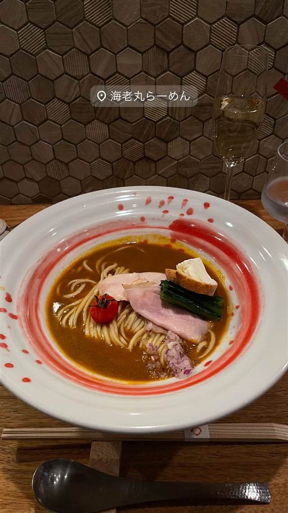

海老丸らーめん
フレンチ出身シェフが作るオマール海老100%のビスクラーメン
海老丸らーめん
フレンチ出身のシェフ・長坂将志氏が2017年に神保町で開業した、オマール海老専門のラーメン店。ラーメン修行を経ず、フレンチの技術と食材でオマール海老のビスクスープを作り上げた異色の一杯で、多い日は70人待ちの行列ができる。
TRIVIA
豆知識
- シェフにラーメン修行の経験はなく、フレンチの技法だけでラーメンを組み立てた
- スープにブランデーや赤ワインを使うなどフレンチレストランさながらの仕込み
REVIEWS
世間の評判
96.6ラーメンDB3.74食べログ
唯一無二の濃厚海老コース仕立て
- 濃厚な海老出汁とアミューズやリゾットまで楽しめる独創的な構成を評価する声が多い
- 2,900円など高価格帯だが満足度が高く納得できるという声もある
- テーブルチェック予約が必要な仕組みが分かりにくいと指摘する声もある
ラーメンデータベース 口コミ291件・総合156位・最新 2026-09
| 創業 | 2017年開業 |
|---|---|
| 系譜 | シェフはラーメン職人としての修行歴はなくフレンチ出身。系列に2014年開業の西麻布「エゴジーヌ」、姉妹店に東京ドームシティラクーアの「French Noodle Factory」がある。 |
| 看板 | オマール海老100%のビスクスープを使ったラーメン |
| こだわり | オマール海老をブランデーや赤ワインで煮詰めたビスクスープを使用。前菜やリゾットが付くコース仕立てで提供する。 |
| どこから | 都心 |
| 行くなら | 行列 予約必須 |
| 営業時間 | 月〜金 11:30-15:00、18:00-22:30 土・日 11:30-20:00 |
| 予算 | 昼 ¥2,000～¥2,999 夜 ¥2,000～¥2,999 |
| 場所 | 神保町駅 東京都千代田区西神田2-1-13 十勝ビル1F |
| メモ | 行列必至（多い日は70人待ちとの報告あり）。神保町駅徒歩4分。 |
食べたもの：ラーメン
地図で見る店の情報ラーメンDBX（その日の営業）Instagram
ONSEN & SAUNA